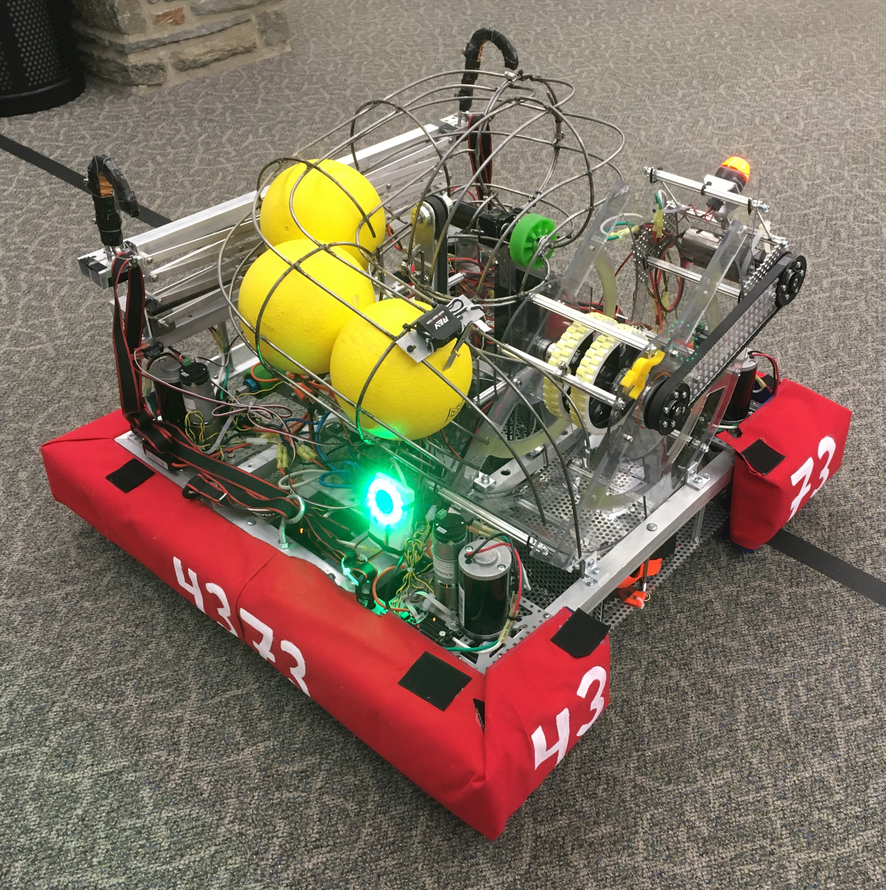
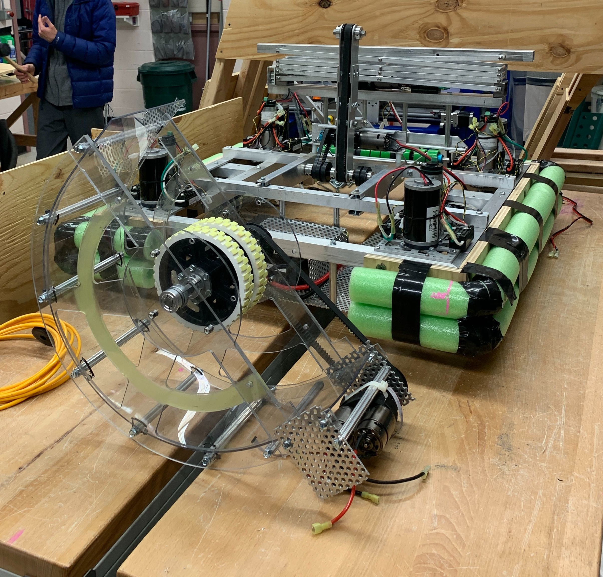
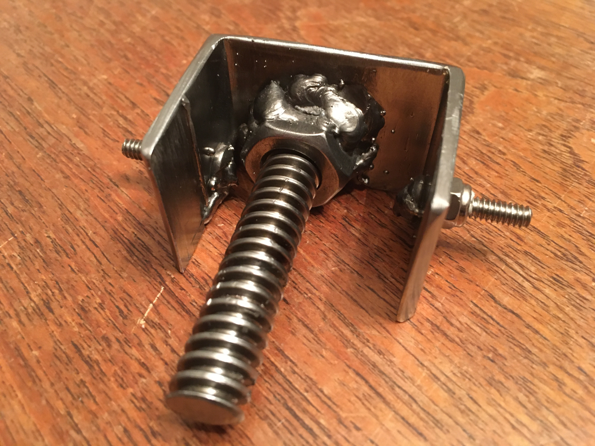
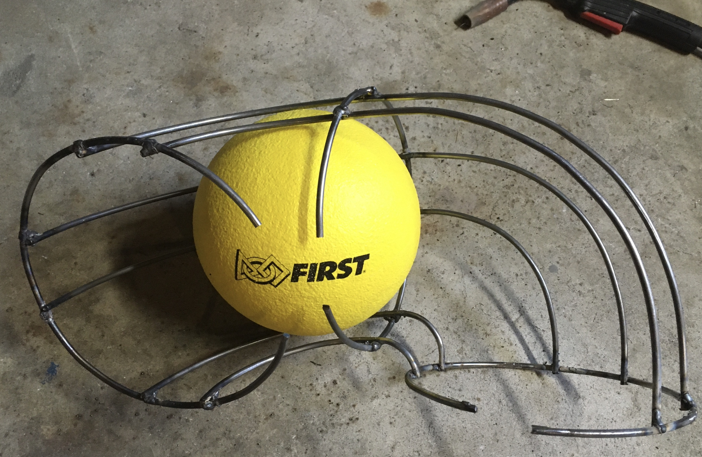
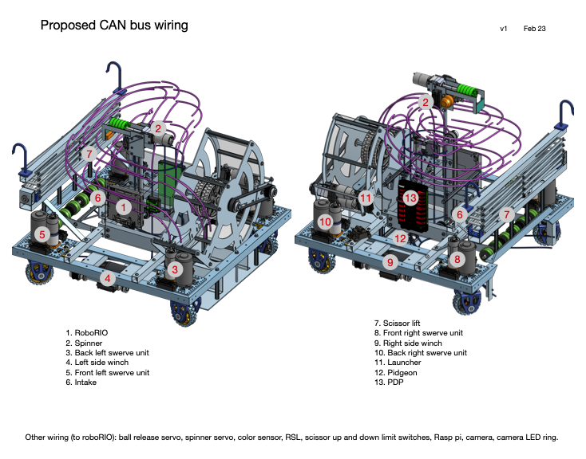

For the 2019-2020 season I aimed to have the team build on the lessons from the previous year, as well as take advantage of our new CNC router. After the previous year's errors in geometry, I got more people involved in CAD and instituted more formal reviews as the model progressed.

The 2019-20 AFS Robotics CAD model, done in Onshape.

The final robot as built matches the CAD model.
Fighting the old rush to start building, I pressed for much more group discussion about which game strategies to prioritize, and brainstorming of different approaches to the various tasks required by the game rules. For example, this year's playfield had what amounted to speed bumps across most of the field, except in a tunnel-like area. The team had built several years of top heavy robots which could not start, stop, or turn quickly without the danger of tipping over. Rather than accept this weakness, I pushed the discussions to break away from old habits, recall our new capabilities for more meticulous, intricate fabrication, and consider different approaches. We optimized subassemblies for volume and packed them together to create a robot whose low overall height allowed it to zoom through the smooth path of the tunnel, and whose low center of gravity made it immune to tipping.
It didn't take much convincing to get the team to agree that the software team needed early access to the robot for them to start development. This was especially true because this would be our very first use of swerve drive - where each wheel can steer and drive independently. Figuring out the linear algebra to achieve an arbitrary transformation (combination of possible movement and possible rotation) was just one of the challenges - developing and testing the drive routines, working with the players to devise a control scheme, tuning the acceleration parameters, and also having time to practice seemed an impossibility. The solution was to build two drive bases so many activities could occur in parallel.
It's alive! Steering and driving part one.
Steering and driving all four parts. "Oh that is cool." (0:10)
As the season progressed, even those who thought we had wasted time doing too much discussion and planning at the start began to realize the payoff. We build proof-of-concept prototypes and chose from among those we knew were viable for further development. This ended the old folly of comitting to an assembly before knowing if we could make it work well, and make it work together with the rest of the robot. Time invested in using CAD meant we could iterate from prototype to production in measurable increments. Making the CAD model absolutely accurate meant all the parts would fit, and also paid off as we started to fabricate those parts directly from CAD to the CNC machine.
Initial launcher prototype testing (left) and beginning of the refined prototype integration, aiming, and tuning (right).
Final launcher assembly and second drive base.

The custom bracket-nut-bolt weldment shown with an extra bit of the acme screw which spun to raise or lower the scissor lift.

The form and clamps used to build the "habitrail" assembly for storing and delivering balls.

For safety reasons I did the welding at home.
Modular construction allowed us to distribute tasks to more team members, which helped the project timeline but more importantly engaged additional students beyond the devoted core members. We established team leads to take charge of each of the subsystems, getting them built and to communicate changes to and from other leads. Students learned the importance of good communication and documentation in a complex project. All of this came together in what was unanimously procalimed our best robot yet.
How was that hooked up?
Getting close!
We have liftoff.
And then in March 2020, the day before our first competition, the pandemic hit and we all went home. We never got to compete with this robot.
Design features:
• Ultra compact design for low center of gravity and clearance through playfield tunnel
• Battery and winch motors located in undercarriage of robot for stability
• All four swerve drive units were identical, with locally-mounted motor controllers, to enable totally modular service / replacement
• Electronics mounted on two easily accessible panels for servicability
• Interior "nerfherder" intake centered balls by driving over them, then fed them up through the center of the robot
• Wireform "habitrail" stored up to the game limit of five balls within the volume contraints of the robot and fed them to the launcher
• Two wheels of the launcher automatically centered the ball for consistent delivery speed and trajectory
• Launcher body and motor unit were separate assemblies for quick replacement if needed and easy belt tension adjustment
• Small and lightweight scissor lift deployed hooks to climbing bar, then dual winches lifted robot via nylon straps